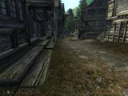

WHAT IS TOTO?
The Oblivion Texture Overhaul (TOTO) is not a mod itself, but rather a guide to a lot of great mods that improve the appearance of The Elder Scrolls IV: Oblivion. TOTO is an ongoing community project to create a resource guide that includes comparison screenshots, installation instructions, download mirror listings, etc. The overall goal is to improve immersion in Oblivion by documenting various texture replacers, as well as correcting omissions and oddities, improving performance, and reducing compatibility problems for these texture replacers. The topics in this guide will address these issues.
In the future, the TOTO team may release patch files, updates, tweaks, and combo packs in an attempt to meet the stated goals of the project. For discussion and feedback, check the ESF thread.
Anyone who isn't already doing so, should download a mod manager such as:
- Wrye Bash
- Vortex -- since the venerable Oblivion Mod Manager may no longer be supported
- (or both Vortex and Wrye Bash!)
OVERHAUL CATEGORIES
There are many excellent texture replacers for Oblivion. So many, in fact, that we can't easily discuss them all in one simple page. Thus, textures are organized here into several categories so the information will be easier to digest. The following links will each take you to a separate page for that category:
World Textures (Updated 03/23/2009)
Includes landscape, architecture, clutter, etc., with recommended installation sequences for 512Mb and 256Mb video cards.
Character Textures (Updated 10/01/2008)
Includes the player character, NPCs, horses, creatures, etc.
Item Textures (Updated 01/06/2009)
Includes weapons, armor, clothing, rings, amulets, etc.
128Mb Video Cards (Updated 9/21/2007)
Most of the recommendations on this site won't work well for 128Mb video cards, so there's a separate page for low-end texture options.
Other Improvements (Updated 3/24/2009)
There are a lot of other essential improvements that just don't fall neatly into one of the above categories, especially since a lot of them aren't actually texture replacers. In any case, look here for everything else you need to make Oblivion rock.
TROUBLESHOOTING
If you're unsure how to install these mods, or just need help, check the Oblivion Mods FAQ for detailed instructions. Also, don't forget to use either the BSA-alteration or BSA-redirection methods of ArchiveInvalidation if you want to see all these great textures without any problems.
I've also updated the Texture Help page with additional tips. As a last resort, you can always post your question in the ESF thread.
CREDITS
Aside from the creators of the individual mods listed here, lots of people in the ESF thread have contributed suggestions, feedback, and (most important) links! Here they are:
Slochy blade9722 GreatMightyWarlord Kal Choedan MiSP andreasgr bata ICUP solardog BulletSix mikal33 przemo3642 Dracon Yukay Hobbs Dae (formerly known as Daedro) Martigen DLO604 Sage Rime FiveFries Venutius
Thanks for all the help, folks!